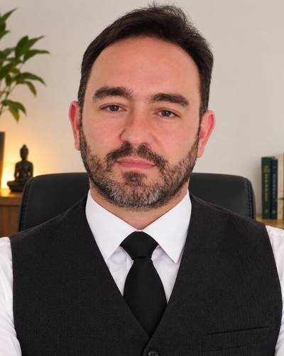

Tarot e oráculos
Leitura com tarot e outros baralhos para entender e decidir sobre uma pergunta específica: relacionamento, trabalho, uma decisão que está pendente. O foco é a reflexão, não a previsão fechada.
Duração: 60 min (ajustar)Tarot e oráculos, mapa astral, mapa numerológico e florais, em atendimentos individuais, presenciais ou online.
Toque na carta para receber uma mensagem
Cada prática é uma forma diferente de organizar o que você sente. Você escolhe uma, ou combina mais de uma.
Leitura com tarot e outros baralhos para entender e decidir sobre uma pergunta específica: relacionamento, trabalho, uma decisão que está pendente. O foco é a reflexão, não a previsão fechada.
Duração: 60 min (ajustar)Interpretação do céu do momento em que você nasceu: temperamento, talentos, desafios e ciclos atuais. Para fazer o mapa, precisamos da data, do horário e do local de nascimento.
A partir do seu nome e da sua data de nascimento, lemos os números que descrevem seu caminho de vida, suas motivações e o momento que você atravessa.
Duração: 60 min (ajustar)Conversa sobre o que você vem sentindo e preparo de uma combinação de florais, com orientação de uso. Um apoio para o equilíbrio emocional, que não substitui acompanhamento médico ou psicológico.
Duração: 60 min (ajustar)Sem cadastro. Tudo acontece no seu aparelho, nada é enviado a servidor.

Você não precisa mais adivinhar o que fazer.
Oi! Meu nome é Marco Guimaraes Jr e sou um buscador, como todos nós.
Cresci numa casa onde o estudo dos mistérios fazia parte da conversa. Em 1990 comecei a estudar tarot e astrologia, e dali vieram a numerologia, a cabala e outras áreas, em escolas e também por conta própria. Hoje meu trabalho está no tarot e outros oráculos e no mapa numerológico. Os demais estudos entram como complemento.
Participei de grupos e classes fechados, primeiro presencialmente e depois também online, nos quais aprendi e pratiquei muito. Agora abro esse trabalho ao público. Tenho cursos e certificados, mas o que mais me ensinou foi conversar com as pessoas e ler o que cada uma trazia.
Atendi sobre temas emocionais e espirituais, e também sobre trabalho, negócios e oportunidades profissionais. Em qualquer assunto, trato tudo com seriedade e sigilo.
Começo sem perguntas, com um "raio-x" dos principais pontos. Falo um panorama de como você está e do que te trouxe até aqui, e muitas dúvidas se resolvem nesse momento. Depois abro para o que você quiser perguntar. Se o atendimento for por e-mail ou WhatsApp, leio as perguntas que você enviar. As cartas e os números contam uma história, e ela costuma explicar de onde vêm os bloqueios e as dúvidas.
Há coisas que não faço: previsão de morte, de gravidez ou de tratamento de doenças, que são assunto para profissionais de cada área. Nada aqui decide por você, nada está escrito em pedra e resultados não são prometidos, porque tudo muda conforme a pessoa muda.
Costumo dizer: "Vamos jogar uma luz sobre essa situação, mas quem caminha nela é você."
Chame no WhatsApp e conte o que busca. Indico o atendimento mais adequado.
Presencial ou por videochamada, em um horário que caiba na sua rotina.
Uma conversa sem pressa. Ao final, você recebe um resumo por escrito.
A primeira mensagem não tem compromisso. Responderei assim que possível.
Chamar no WhatsApp